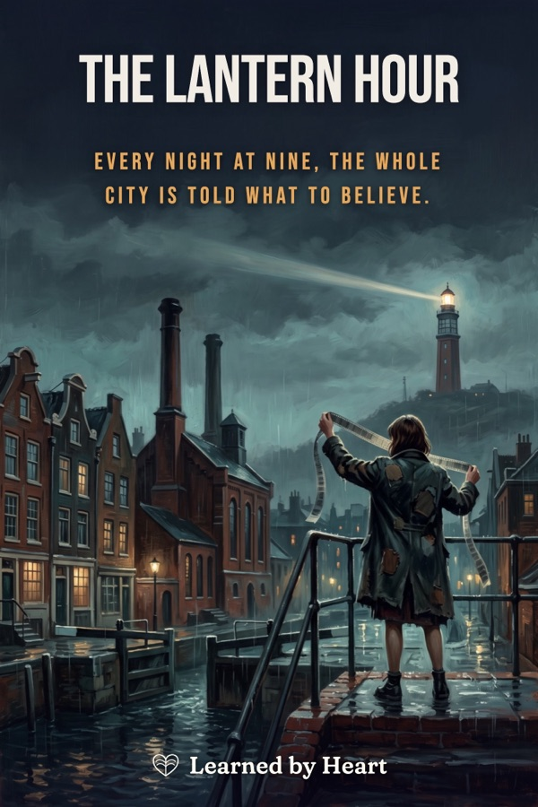
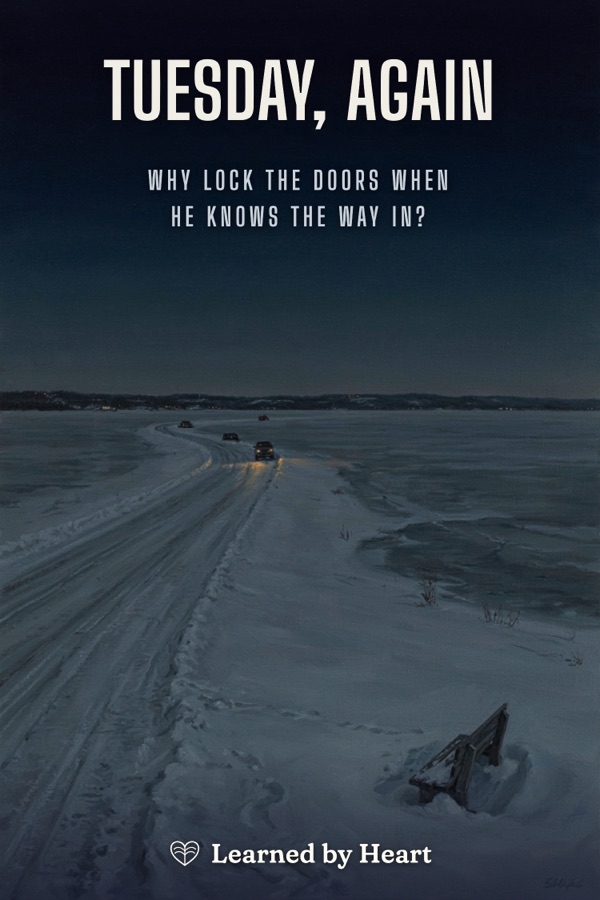
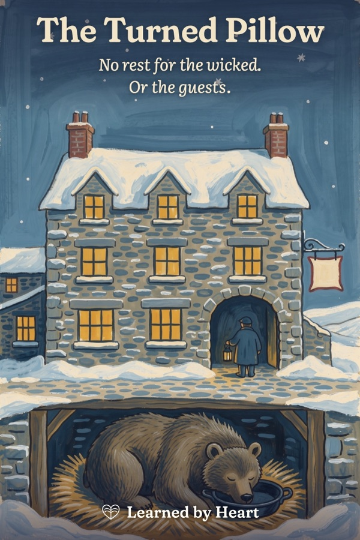
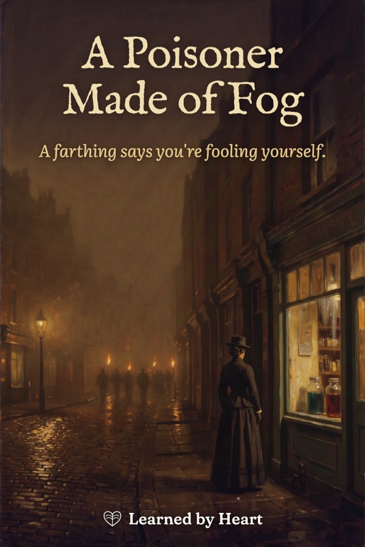

Learned by Heart › Library › Novels that teach how people think
Novels that teach how people think
Psychological thrillers, comedies and dramas about why people decide what they decide: biases, ethics, persuasion and the mind, learned through characters you care about. Subjects here: Stoic philosophy for everyday life, cognitive biases and clear thinking, habits and memory, how the mind works and what therapy does, moral philosophy, propaganda and misinformation, sleep, the science of relationships. Chapter one of every book is free.
 Turn Towards MeA romantic comedy for readers of Emily Henryteaches the science of relationshipsTwo exes. One mic. What could go wrong?
Turn Towards MeA romantic comedy for readers of Emily Henryteaches the science of relationshipsTwo exes. One mic. What could go wrong?
The Lantern HourA dystopian adventure for readers of Suzanne Collinsteaches propaganda and misinformationEvery night, the city is told what to believe. The Keeper's HoursA quiet literary novel for readers of Kazuo Ishiguroteaches Stoic philosophy for everyday lifeEvery hour was accounted for. Except one.
The Keeper's HoursA quiet literary novel for readers of Kazuo Ishiguroteaches Stoic philosophy for everyday lifeEvery hour was accounted for. Except one.
Tuesday, AgainA time-loop thriller for readers of Blake Crouchteaches habits and memoryWhy lock the doors when he knows the way in?
The Turned PillowA cosy fantasy for readers of Travis Baldreeteaches sleepNo rest for the wicked. Or the guests. The FootbridgeA dark academia novel for readers of Donna Tartt and M.L. Rioteaches moral philosophyWhen push comes to shove, who goes over?
The FootbridgeA dark academia novel for readers of Donna Tartt and M.L. Rioteaches moral philosophyWhen push comes to shove, who goes over?
A Poisoner Made of FogA Victorian mystery for readers of Arthur Conan Doyleteaches cognitive biases and clear thinkingA farthing says you're fooling yourself. The Other ChairA psychological thriller for readers of Alex Michaelides and Liane Moriartyteaches how the mind works and what therapy doesSome secrets you only tell your therapist.
The Other ChairA psychological thriller for readers of Alex Michaelides and Liane Moriartyteaches how the mind works and what therapy doesSome secrets you only tell your therapist.
Want one written just for you?
Tell us what you love reading and what you've always meant to understand, and we'll write a novel for you, or for someone you love. Chapter one arrives within 24 hours.
Start your story